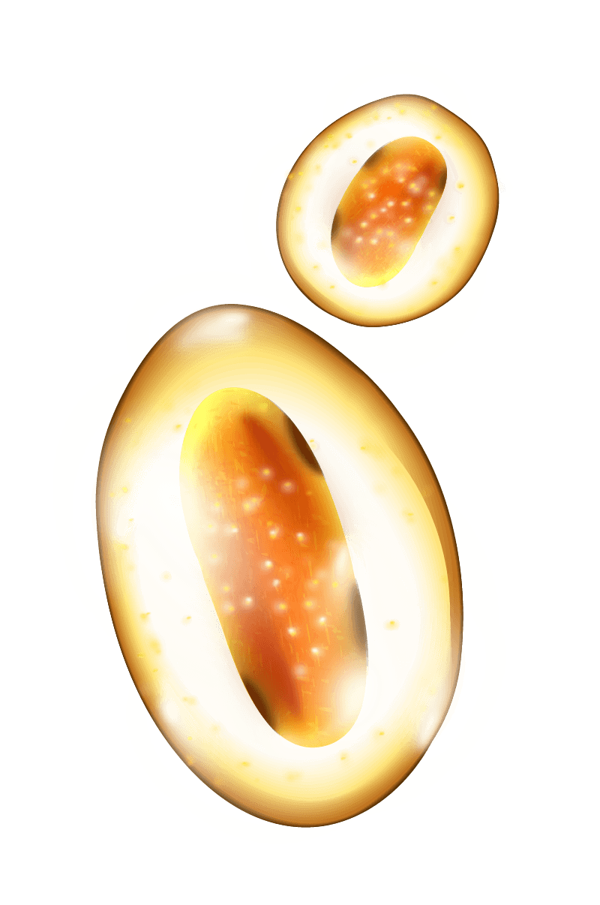
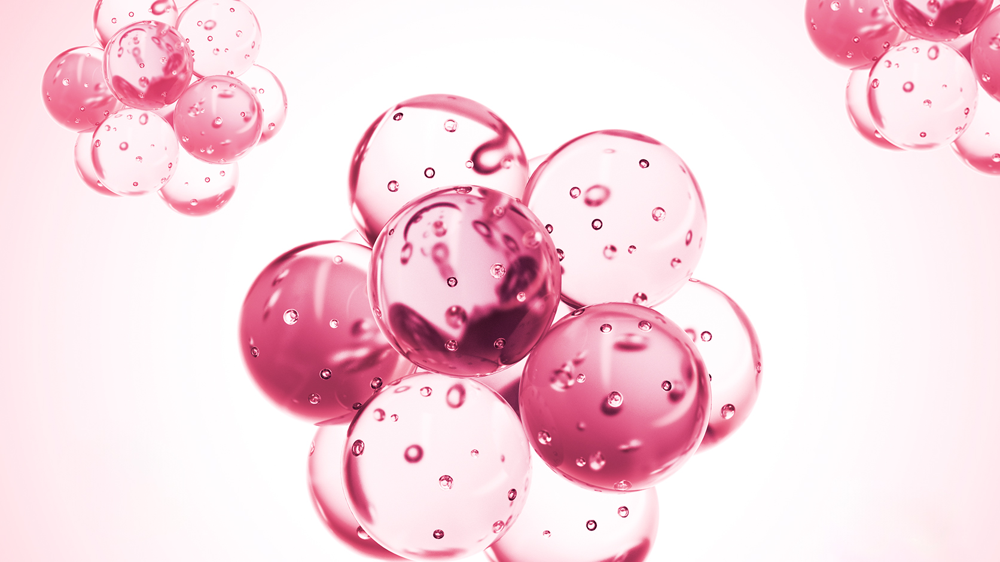
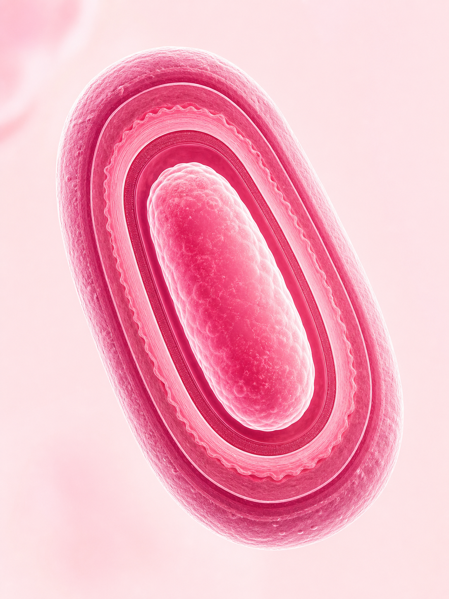

妙利散專利菌株，具備芽孢結構耐酸性耐熱性強，
可與抗生素同期使用，pH 2 環境存活率 80-90%
超越醫療級：活性生物製劑（LBP，Live Biotherapeutic Product）是以活菌為主成分、通過藥品審查程序取得藥證的治療性醫療製劑。
必須精確到菌株層級（genus, species, strain），才能對應可重複驗證的臨床試驗。CBM588 的全名 Clostridium butyricum MIYAIRI 588 對應到上百篇 peer-reviewed 論文的精確微生物身份，不是行銷詞彙。
益生菌必須穿越胃酸（pH 1.5–3.5）才能抵達結腸。CBM588 以芽孢形式通過胃腸屏障，在 pH 2 環境下存活率達 80-90%，且可與抗生素同期使用而不失效。
需要針對特定疾病、特定適應症，以人體受試者為基礎的臨床研究，而非僅著眼在體外或動物實驗層次。CBM588 在日本自 1967 年起被核准為處方藥，涵蓋兒科、中高齡等多條群試驗。
CBM588 同時具備兩種特性，而這兩種特性在市售益生菌中幾乎不會同時出現。

BUTYRATE PRODUCERClostridium butyricum 的代謝終產物是「酪酸」（butyrate），而非一般乳酸菌所產生的乳酸。酪酸是大腸上皮細胞最主要的能量來源，提供結腸細胞約 50～70% 的 ATP 產能，同時具備調節腸道環境的功能，是乳酸在生化機制上無法替代的分子。

SPORE FORMINGCBM588 能以芽孢形式進入消化道，在 pH 2 的胃酸環境中維持 60～90% 存活率，抵達結腸後偵測到特定化學訊號（如 L-丙胺酸）才啟動萌發，轉化為有完整代謝活性的活菌。這讓 CBM588 不需要冷藏保存，在物理結構上就具備穿越消化道的能力。
以非芽孢形態益生菌在市售標準下的代表性趨勢作為比較基準
| 比較項目 | 一般市售益生菌 | CBM588 宮入菌 |
|---|---|---|
| 菌株精確度 | 多為菌種層級，批次差異大 | 精確到菌株層級，可追溯試驗 |
| 耐酸（pH 2） | 多數不確定，普遍偏低 | 芽孢存活率 60～90% |
| 產生酪酸 | 主要產乳酸，不具酪酸功能 | 大量產生，結腸黏膜主要能量 |
| 抗生素配用 | 建議間隔服用，效果打折 | 可同期使用，療程中不失效 |
| 保存條件 | 多需冷藏，低溫保存 | 室溫穩定，無需冷鏈 |
| 促進好菌 | 因品牌而異 | 促進腸道 A 菌 / B 菌增殖 |
| 醫療研究基礎 | 文獻品質參差，多為食品研究 | 50+ 年人體試驗，多科別驗證 |
乳酸菌族就涵蓋數百個個別種與上千個菌株，各菌株表現差異顯著。本表為代表性趨勢比較，不代表所有產品一概如此。建議確認個別菌株的研究資料。
芽孢結構讓 CBM588 在多數益生菌失效的環境下，依然能維持活性。
芽孢形式在胃酸環境下展現出顯著較高的存活特性，乳酸菌在相同條件下存活率偏低，為代表性趨勢比較。
多數非芽孢益生菌在抗生素療程中存活率偏低。CBM588 的芽孢結構特性使其在抗生素環境下維持活性，可於療程中同步服用。
芽孢型態不需冷鏈保存，在日本醫療體系持續使用逾 50 年。
＊各菌株表現差異大，本圖為代表性趨勢示意，不代表所有產品。
| 溫度條件 | 立刻 | 10 分 | 30 分 | 60 分 |
|---|---|---|---|---|
| 常溫水 | 5×10⁷ | 6×10⁷ | 5×10⁷ | 5×10⁷ |
| 52°C | 5×10⁷ | 5×10⁷ | 5×10⁷ | 4×10⁷ |
| 55°C | 4×10⁷ | 4×10⁷ | 3×10⁷ | 3×10⁷ |
宮入菌錠（Miyarisan Tab.）規格：每錠含活菌數 5×10⁷ 以上。常溫至 55°C 熱水中 60 分鐘，活菌數維持穩定。
整理 CBM588 已完成人體臨床試驗中，具有較穩健支持的研究方向，引用均來自已發表之學術期刊論文。
日本多中心臨床觀察中，受試者連續使用 CBM588 後，腸道症狀發生率呈現顯著下降趨勢，腹痛、腹脹、腹瀉等多項指標均有改善記錄，整體改善比例達研究者設定之顯著差異標準。
兒科隨機對照試驗比較抗生素合併 CBM588 的腸道狀況。合併組的腹瀉發生率顯著低於單純使用抗生素組，Cephalosporin 及 Penicillin 兩個系列均觀察到相近趨勢，整體達統計顯著差異。
臨床試驗比較三合一除菌療法加入 CBM588 的結果。加入 CBM588 組別的除菌成功率及療程中腸胃不適症狀改善率均優於對照組，兩項指標均達統計顯著差異。
參考文獻：Teramoto et al. (2003) J Pediatr Gastroenterol Nutr | Fujimoto et al. (2019) iScience | Sun et al. (2018) Front Microbiol | Hayashi et al. (2021) J Immunol